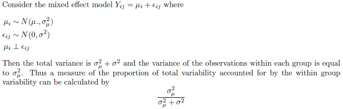

Intraclass Correlation Coefficient
The Intraclass Correlation Coefficient (ICC) is a measure of the association of experimental units within groups. There are many forms of the Intraclass Correlation Coefficient with perhaps the most popular version coming from mixed effects models in ANOVA.

This quantity takes on the value 0 when there is no variability within each group, i.e. all of the observations within each group are the same. It will be close to zero when the within group variability is small in comparison to the total variability. Similarly, the quantity will be close to 1 when the within group variability is large relative to the total variability.
-- ErinEsp - 02 Jan 2011